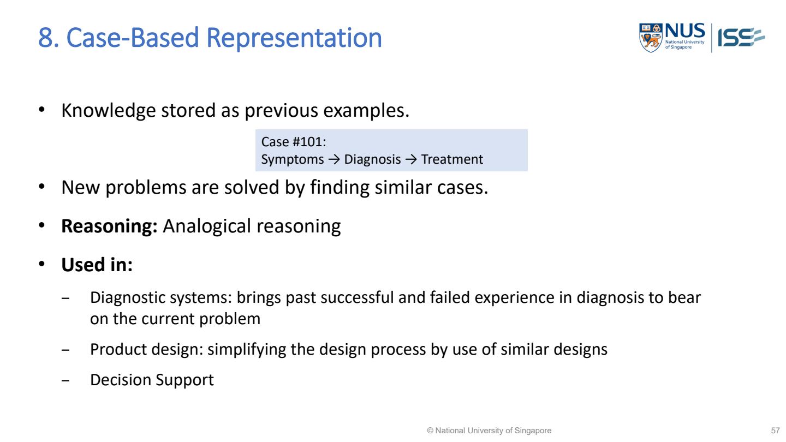

Case-based reasoning（案例推理；找舊案例再調整）
Case-based reasoning solves a new problem by retrieving similar previous cases, adapting their solutions and retaining the reviewed outcome.
A returned similar case is not enough: examine differences, adapt and review outcome.
Lecture example redrawn · MR-Day 2_JR_v1.pdf · PDF p.38

MR-Day 2_JR_v1.pdf · PDF p.56 / printed slide 57. Original supplied slide, not redrawn.
Case-Based Representation
Open representation format, meaning and Used Cases →Illustrative adapting a support（支持度；同時出現的交易比例） solution
Worked study example: A new laptop cannot connect to VPN. The case base（案例庫；儲存可重用的案例） contains previous incidents and their outcomes. Values are invented for reasoning（推理） practice.
| Retrieved（檢索；找出相關資料） case | Similarity（相似度） | Critical difference | Decision |
|---|---|---|---|
| Old laptop, same VPN symptom | High | Different operating system | Do not copy configuration blindly |
| Same OS, expired certificate | High | New certificate still valid | Cause not supported; seek another case |
| Same OS, blocked network port | Moderate | Same network restriction observed | Adapt approved network fix |
| After applying candidate fix | Not a similarity question | Connection succeeds/fails | Record verified outcome |
What this tells us: A lower overall similarity case may be more useful if it shares the decisive causal（因果；一者造成另一者變化） condition. Outcome review distinguishes a successful adaptation from an attractive story.
How is a previous case retrieved and adapted?
- Case-based reasoning keeps prior（先驗機率；看證據之前） problems together with their solutions and outcomes. Retrieval finds experience worth considering, but successful reuse also requires checking differences: an old solution can be wrong for a new case even when several observed features（特徵；描述樣本的屬性） match.
- Adaptation is the mechanism connecting retrieval to action. It may change a parameter, remove an unsuitable step or select another case when a critical precondition differs. Merely showing the nearest historical record is a retrieval service; explaining how its solution is made applicable completes more of the reasoning task.
- Retention should include success or failure after review, not simply save every generated answer. Otherwise the case base accumulates confident but untested proposals. Similarity features, adaptation decisions and provenance（來源脈絡；資料從哪裡來） make the result inspectable and support targeted correction when an apparently similar case failed.
Implementation steps and their purpose
- Represent the new case using relevant（相關性；是否切合問題） features.
- Retrieve similar stored cases.
- Inspect why the retrieved cases are relevant.
- Adapt their solutions to the important differences.
- Evaluate the proposed solution and retain success/failure for future use.
Choose the method from the problem
Suitable when solved examples are available but writing complete explicit（明確；直接提供的資訊） rules is difficult.
| Scenario cue | Suitable choice | Why it fits |
|---|---|---|
| Rich prior solved cases; incomplete explicit rules | Case-based reasoning | Experience can guide solutions with documented adaptation |
| Need universal policy（策略） compliance | Add explicit constraints（約束條件）/rules | A past successful case cannot authorise a forbidden action |
Diagnose: Nearest case gives wrong remedy
| What you observe | Why it happens | What to change | Why that helps |
|---|---|---|---|
| Nearest case gives wrong remedy | Similarity ignores decisive difference | Weight relevant features and inspect preconditions | Surface resemblance does not establish applicability |
| Case base worsens over time | Generated answers retained without validation | Retain reviewed outcomes and failures | Future reuse needs trustworthy experience |
Common wrong answers and the exact correction
- Nearest-case retrieval alone omits adaptation and review.
- A case database is not automatically an explicit rule engine.
Implement it and test the outcome
Data, components and application
- Superficial similarity → use task-relevant features and differences → a familiar-looking case may need another solution.
- Bad historical solutions → quality review before retention → errors can otherwise propagate.
How to evaluate it
Measure retrieval relevance and final solution success separately. Explain the matched case, differences and adaptation.
Build the answer in this order
- Define case fields.
- Specify similarity/retrieval.
- Explain adaptation.
- Validate and retain reviewed result.
An answer you could write
- I retrieve VPN incidents by relevant symptoms and device context, then check whether the old solution’s cause and operating-system assumptions（假設；答案依賴但題目未明說的條件） match this case.
- The blocked-network case is useful only if the same restriction is observed; I retain the adapted remedy with its reviewed success or failure.